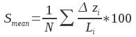
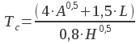

DESCRIPTION
r.basin generates the main morphometric parameters of the basin
starting from the digital elevation model and the coordinates of
the basin's closing section.
Important:
The closing section's coordinates must belong to the river network generated by
r.stream.extract. It is suggested to run it
beforehand.
Morphometric parameters of basin
The main parameters are:
- The coordinates of the vertices of the rectangle containing the basin.
- The center of gravity of the basin: the coordinates of the pixel nearest
to the center of gravity of the geometric figure resulting from the projection
of the basin on the horizontal plane.
- The area of the basin: is the area of a single cell multiplied by the
number of cells belonging to the basin.
- The perimeter: is the length of the contour of the figure resulting by the
projection of the basin on the horizontal plane.
- Characteristic values of elevation: the highest and the lowest altitude,
the difference between them and the mean elevation calculated as the sum of
the values of the cells divided by the number of the cells.
- The mean slope, calculated averaging the slope map.
- The length of the directing vector: the length of the vector linking the
outlet to the center of gravity of the basin.
- The prevalent orientation: in Grass GIS the aspect categories represent
the number degrees of east and they increase counterclockwise: (90deg is North,
180 is West, 270 is South 360 is East). The aspect value 0 is used to
indicate undefined aspect in flat areas with slope=0. We instead
calculate the orientation as the number of degree from north,
increasing counterclockwise.
- The length of main channel: is the length of the longest succession
of segments that connect a source to the outlet of the basin.
- The mean slope of main channel: it is calculated as follows

where N is the topological diameter, i.e. the number of links in which the main
channel can be divided on the basis of the junctions.
- The circularity ratio: is the ratio between the area of the basin and the
area of the circle having the same perimeter of the basin.
- The elongation ratio: is the ratio between the diameter of the circle having
the same area of the basin and the length of the main channel.
- The compactness coefficient: is the ratio between the perimeter of the basin
and the diameter of the circle having the same area of the basin.
- The shape factor: is the ratio between the area of the basin and the square
of the length of the main channel.
- The concentration time (Giandotti, 1934):

Where A is the area, L the length of the main channel and H the difference between
the highest and the lowest elevation of the basin.
- The mean hillslope length: is the mean of the distances calculated along
the flow direction of each point non belonging to the river network from the
point in which flows into the network.
- The magnitudo: is the number of the branches of order 1 following the
Strahler hierarchy.
- The max order: is the order of the basin, following the Strahler hierarchy.
- The number of streams: is the number of the branches of the river network.
- The total stream length: is the sum of the length of every branches.
- The first order stream frequency: is the ratio between the magnitudo and the
area of the basin.
- The drainage density: is the ratio between the total length of the river
network and the area.
- The Horton ratios (Horton, 1945; Strahler, 1957).
Plots
- The distance-area function, also known as Width Function: in x axis
is the length and in y axis is the area.
- The hypsographic curve provides
the distribution of the areas at different altitudes. Each point on the
hypsographic curve has on the y-axis the altitude and on the x-axis the
percentage of basin surface placed above that altitude.
- The ipsometric curve has the same shape but is dimensionless.
Dependencies
- Matplotlib
- r.stream.basins
- r.stream.extract
- r.stream.stats
- r.stream.distance
- r.stream.order
- r.wf
- r.ipso
SEE ALSO
r.stream.basins,
r.stream.distance,
r.stream.extract,
r.stream.order,
r.stream.stats,
r.wf,
r.ipso,
r.watershed
REFERENCES
Rodriguez-Iturbe I., Rinaldo A. — Fractal River Basins, Chance and Self-Organization. Cambridge Press (2001)
In Italian: Di Leo M., Di Stefano M., Claps P., Sole A. — Caratterizzazione morfometrica del bacino idrografico in GRASS GIS
(Morphometric characterization of the catchment in GRASS GIS environment), Geomatics Workbooks, n. 9 (2010)
AUTHORS
Margherita Di Leo (dileomargherita AT gmail DOT com), Massimo Di Stefano
Last changed: $Date$